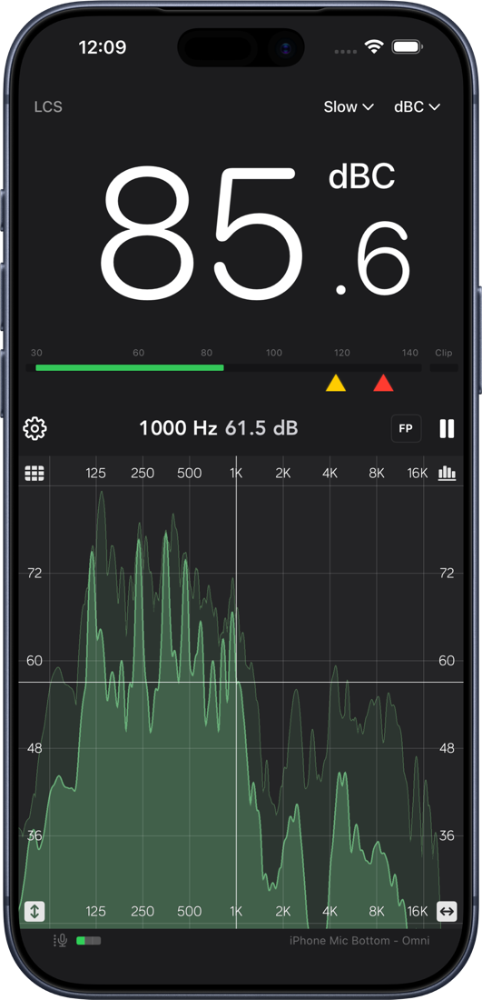
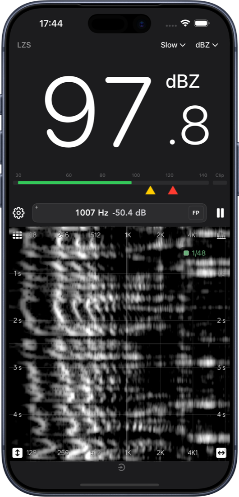
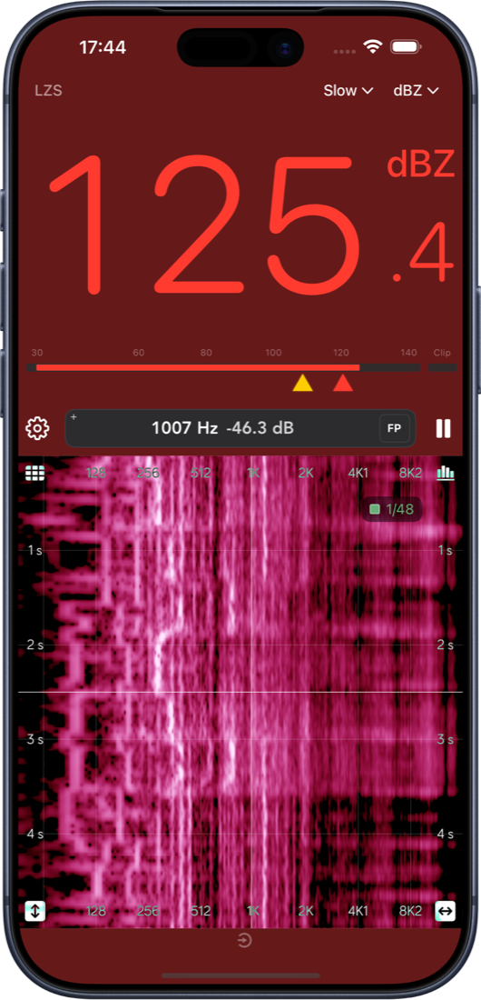
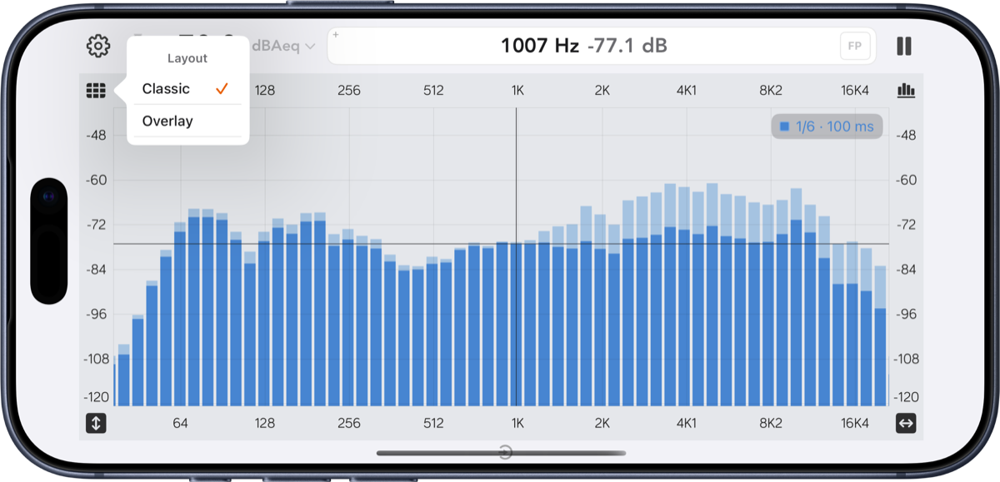

Built-in or external
Built-in mic, headset, or a class-compliant USB interface. Where a device offers several capsules — front or rear, top or bottom — you choose which one.
Features
Spectrum Eye is a live real-time analyzer: it shows how loud each frequency band is, right now, from your microphone or interface. Below is what you get and what each control is for.
Analyzer
The plot in the center is the live spectrum. Bars give you fractional-octave RTA bands, line gives a smoothed curve with optional fill, and the spectrogram maps frequency against time. Resolution runs from 1/1 down to 1/96 octave, with adjustable fall rate and peak hold.
Pinch to zoom — horizontally for frequency span, vertically for level span. Drag a scale to pan along that axis alone. The cursor readout shows exact Hz and dB under your finger, and Find Peak snaps it to the loudest band in view.


SPL meter
The SPL readout runs in parallel with the spectrum using IEC-style time weighting: Fast, Slow or Leq over an interval you choose. Frequency weighting is A, C or Z (flat). Tap the meter to expand the large panel with oversized digits and the alarm bar.
Yellow and red thresholds are stored separately for each frequency weighting; drag them on the alarm bar or type exact values in Settings. Cross one and the app tints as a warning, so a glance is enough.

Input & calibration
A measurement is only as honest as its input chain. Spectrum Eye lets you pick the route, bypass what iOS would otherwise do to the signal, and load your microphone's own correction curve.
Built-in mic, headset, or a class-compliant USB interface. Where a device offers several capsules — front or rear, top or bottom — you choose which one.
Switches off Apple's voice chain: no high-pass, no automatic gain, no limiting. On by default, and recommended for any RTA work on a built-in mic.
Load sensitivity-versus-frequency files for the current route. Combine with an SPL offset for absolute levels in dB.
A built-in source for sweeps of a room or a check of a PA. With background audio it keeps playing from the Lock Screen, and its length can be matched to the FFT size.
Where the route exposes input gain, set it for a strong signal without clipping and watch the LEDs confirm it.
FFT size, peak hold behaviour, generator options and appearance all live in Settings, one tap from the control bar.
Themes & layout
Outdoor events are the hardest place to read a screen, so Spectrum Eye ships a proper light theme alongside the dark one. Spectrogram palettes are adjustable too — full colour when you want contrast, grayscale when you want to see structure.
The layout control switches between overlay, where grid and scales sit on top of the plot for maximum plot area, and classic, which keeps the scales in their own margin.

iPad
On iPadOS 26 and later, swipe down from the top of the screen for a full menu bar — Settings, View ranges and Help — and press ⌘/ to search help topics. Hold ⌘ with a hardware keyboard to see the shortcuts.

Privacy
Spectrum Eye analyzes sound locally. It does not record, store or upload your audio for analysis. The full details are in the privacy policy.
Get started
Questions, requests, or a mic file that won't load? Send them straight from the app: Settings → Send Feedback. Feature ideas are collected in the open on the public roadmap, and release news goes out on Facebook.